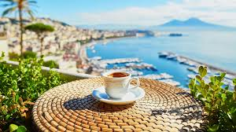

Top Coffee Destinations

Imagine drinking coffee while overlooking a mountain range or sitting in a quiet café in a new city. Coffee tastes even better when paired with a great environment.
Some of the best places to enjoy coffee include Paris cafés, Italian espresso bars, and beachside shops in Hawaii. Each location offers a unique experience that makes coffee more enjoyable.